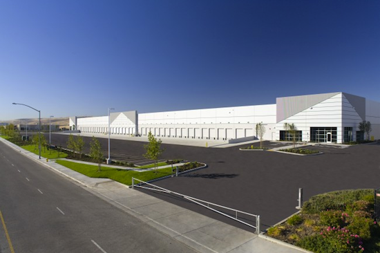
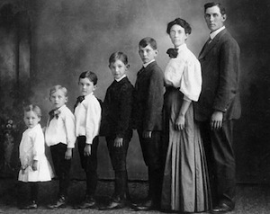

A Mirror Fashion é a maior empresa comércio eletrônico no segmento de moda em todo o mundo.
Fundada em 1932, possui filiais em 124 países, sendo líder de mercado com mais de 90% de
participação em 118 deles.
Nosso centro de distribuição fica em Jacarezinho, no Paraná. De lá, saem 48 aviões que
distribuem nossos produtos às casas do mundo todo. Nosso centro de distribuição:

Centro de distribuição da Mirror Fashion
Compre suas roupas e acessórios na Mirror Fashion. Acesse nossa loja ou entre
em contato
se tiver dúvidas. Conheça também nossa história e nossos diferenciais.
História

Família Pelho
A fundação em 1932 ocorreu no momento da descoberta econônica do interior do Paraná. A
família Pelho, tradicional da região, investiu todas as suas economias nessa nova iniciativa,
revolucionária para a época. O fundador Eduardo Simões Pelho, dotado de particular visão
administrativa, guiou os negócios da empresa durante mais de 50 anos, muitos deles ao lado
de seu filho E. S. Pelho Filho, atual CEO. O nome da empresa é inspirado no nome da família.
O crescimento da empresa foi praticamente instantâneo. Nos primeiros 5 anos, já atendia 18 países.
Bateu a marca de 100 países em apenas 15 anos de existência. Até hoje, já atendeu 740 milhões
de usuários diferentes, em bilhões de diferentes pedidos.
O crescimento em número de funcionários é também assombroso. Hoje, é a maior empregadora do
Brasil, mas mesmo após apenas 5 anos de sua existência, já possuía 30 mil funcionários. Fora do
Brasil, há 240 mil funcionários, além dos 890 mil brasileiros nas instalações de
Jacarezinho e
nos escritórios em todo país.
Dada a importância econômica da empresa para o Brasil, a família Pelho já recebeu diversos
prêmios,
homenagens e condecorações. Todos os presidentes do Brasil já visitaram as instalações da Mirror
Fashion, além de presidentes da União Européia, Ásia e o secretário-geral da
ONU.
Diferenciais
Menor preço do varejo, garantido
Se você achar uma loja mais barata, leva o produto de graça
Pague em reais, dólares, euros ou bitcoins
Todas as compras com frete grátis para o mundo todo
Maior comércio eletrônico de moda do mundo
Atendimento via telefone, email, chat, twitter, facebook, carta, fax e telegrama